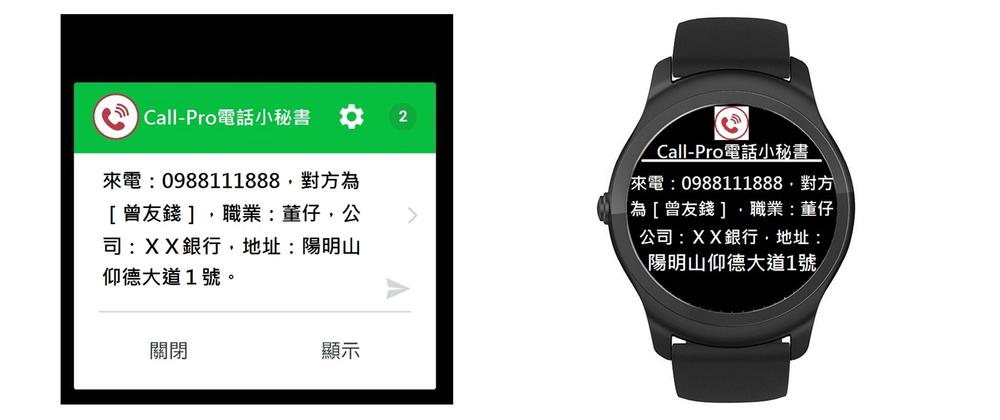
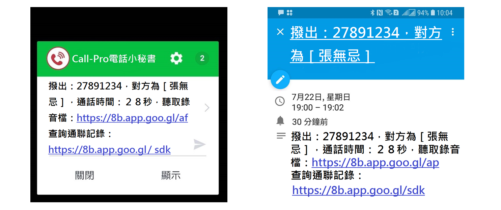
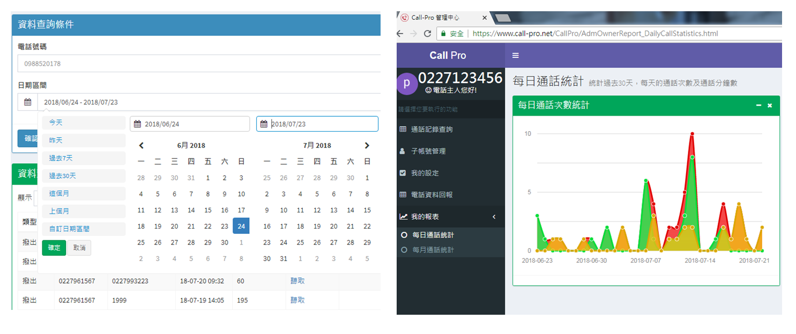
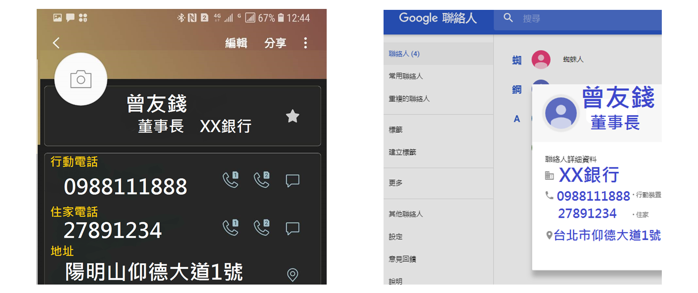
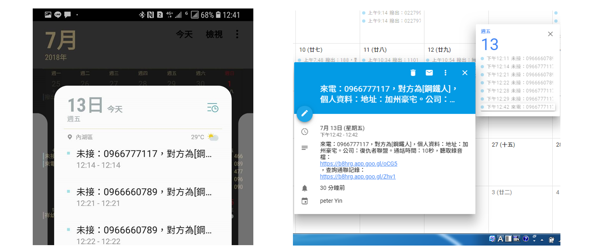
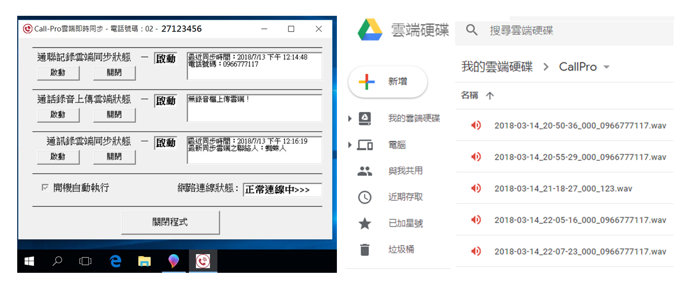
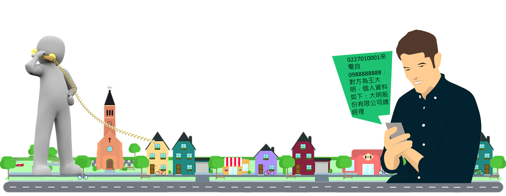

公司來電免接聽就能知道對方是誰
-
讓您的企業能提供免下車服務（幼兒園家長接送，餐飲外帶）
-
讓您的企業接聽時能親切的問候，讓對方備感尊榮
-
讓您接訂單時無須詢問對方資料，提昇接單效率與客戶服務品質
-
讓您免除黑名單的電話騷擾，無須接聽您不想浪費時間的電話
-
讓您能在通話前能有預先準備，知道對方的來意與如何應付

來電與撥出雙向錄音
-
讓您記錄客戶與廠商交辦事項與雙方確認之細節內容
-
讓您隨時掌握公司所有進出電話的討論事項
-
讓您的企業員工減少公器私用，減少電話費開銷
-
讓您能依個案作為教材，提昇電話服務品質
-
讓您發生爭議時，有憑有據不會各說各話
-
讓困擾發生時，能夠舉證保護您的企業

完整的往來通聯紀錄
-
讓您追蹤每一客戶的往來紀錄，了解每個客戶的消費習性
-
讓您掌握所有員工的話務紀錄，進而協助應對能力
-
讓您透過報表分析話務使用狀況，提升業務效率

雲端通訊錄即時同步
-
讓您在任何地方都能查詢客戶或廠商的聯絡方式
-
加密同步雲端通訊錄，讓您更換手機電腦都不用擔心
-
無須自建通訊錄，透過網路自動比對，讓您知道來電是誰

電話進出紀錄行事曆即時同步雲端
-
讓您透過手機行事曆輕鬆掌握每天話務
-
透過行事曆分享，讓多人都能共享相關資訊
-
雲端自動同步，即時掌握每通電話進出
-
切換年、月、週、天的瀏覽方式，讓您輕鬆查詢

多層次管理與多樣化界面
-
讓您可以授權多位員工，來電時查看對方資料
-
讓您決定通話錄音是否即時通步雲端
-
隨時可透過手機、電腦、平板、手錶查詢編輯各項資料
-
整合手機通訊錄行事曆Line即時通雲端硬碟，讓您簡單上手
使用情境
若有人撥打您家中、公司電話，當電話開始響鈴時，您的手機就會立即接到一通LINE的訊息通知，通知內容包含了來電者的姓名及電話等資訊。
當家中、公司電話通話結束時，系統會將此次通話的錄音檔儲存在您的電腦中、或上傳至您的Google雲端硬碟中，您可以隨時聆聽每次撥出或接到的電話內容。

特色與優勢
-
無須花費購買軟硬體設備，每月只需負擔２９９元月租費，享有終身保固。
-
利用習慣的Line與手機通訊錄、行事曆、雲端硬碟等介面，無須學習就能上手。
-
無須綁約也沒有違約金，讓您想用就用，不用就退租。
-
支援多條室內電話線路，讓您的企業電話全方位掌握。(第二線路起八折計價)。
-
2安培主機僅有手機大小，不占空間，專人安裝。
© Call-Pro. All rights reserved. |
Design: HTML5 UP